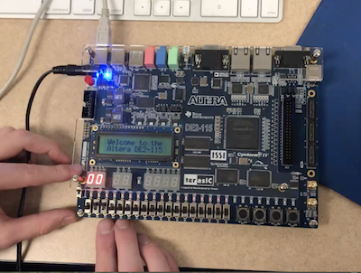

About Jack Miller
Personal Bio
I was born in Washington, D.C., and lived nearby until I was 8, when my family moved
to South Jersey, where we still live.
At BC, I work for The Heights, the independent student
newspaper. I used to be the news editor, and I more recently have taken a position as a senior staff writer.
My interests include U.S. politics, journalism, and elections.
Studying political science and computer science at Boston's College.
Author profile |
Twitter |
LinkedIn |
millafq at bc dot edu
News
Jan. 16, 2020
I'm looking foward to be helping students develop their writing skills, especially at BC, where writing is so emphasized.
Jan. 13, 2020
I have worked at The Heights as an editor since my second semester as a freshmen, when I joined as the associate investigative editor. I am now stepping back as a senior staff writer.
Jan. 13, 2020
I am taking several computer science classes this semester, including Data Science, Web Application Development, and Prinicples of Programming Languages. I am looking foward to tackling more advanced topics.
Projects
Web Application Development portfolio

I am drafting a portfolio website for my web application development class. The task involves some basic HTML, which I have never used before. If you're a fan of recursion, check out the link here for more information!
Tracking vulnerable members of Congress

I analyzed how margin of victory predicted the behavior of members of the United States House of Representatives. I then took a look back at the patterns of previous Congresses to speculate on where the 2020 elections might lead the country. Click here for more information.
Computer Organization counter project

The final project for my Computer Organization class last semester required us to work in Verilog to create a program of our choice with a hardware component. My partner and I decided to make a clock that incemented a counter with some special functionality. Find out more here.